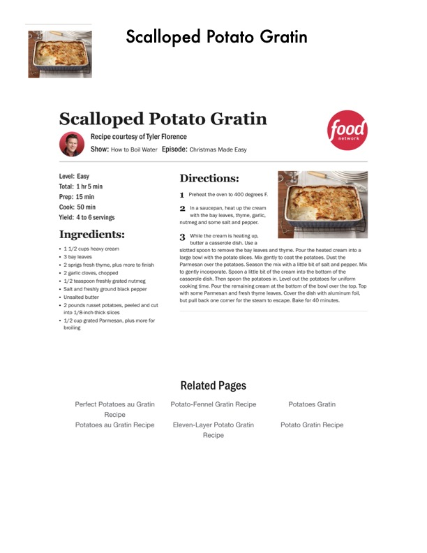

Scalloped Potato Gratin

Original cookbook page 242
Ingredients
- + 1.4/2 cups heavy cream
- + 3 bay leaves
- + 2 sprigs fresh thyme, plus more to finish
- + 2 garlic cloves, chopped
- + 1/2 teaspoon freshly grated nutmeg
- + Salt and freshly ground black pepper
- + Unsalted butter
- + 2 pounds russet potatoes, peeled and cut
- into 1/8-inch-thick slices
- + 4/2 cup grated Parmesan, plus more for
- broiling
- Perfect Potatoes au Gratin
- Recipe
- Potatoes au Gratin Recipe
- Potato-Fennel Gratin Recipe
Instructions
- Preheat the oven to 400 degrees F.
- Inasaucepan, heat up the cream with the bay leaves, thyme, garlic, nutmeg and some salt and pepper. While the cream is heating up, butter a casserole dish. Use a slotted spoon to remove the bay leaves and thyme. Pour th large bowl with the potato slices. Mix gently to coat the pot Parmesan over the potatoes. Season the mix with a little b to gently incorporate. Spoon a little bit of the cream into th casserole dish. Then spoon the potatoes in. Level out the I cooking time. Pour the remaining cream at the bottom of t with some Parmesan and fresh thyme leaves. Cover the di but pull back one corner for the steam to escape. Bake for Related Pages Potatoe Eleven-Layer Potato Gratin Potato Gr. Recipe
Recipe #242 from collection